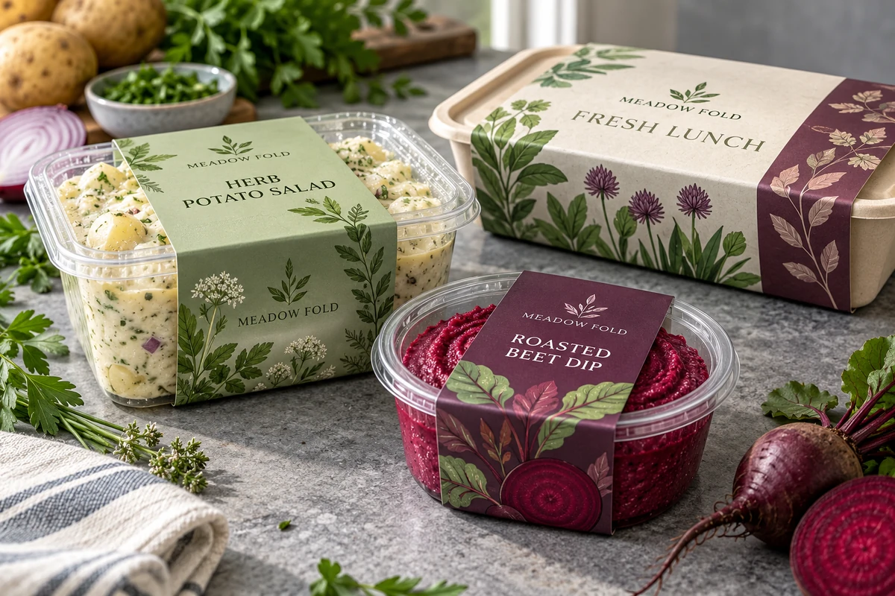
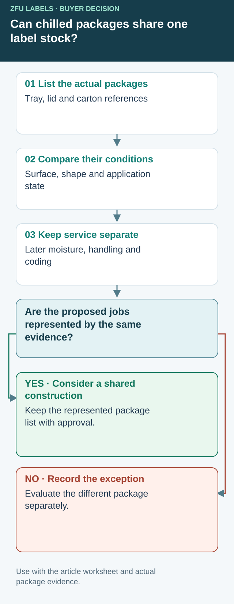

Decide which chilled packages can share a label construction
One refrigerated-food label specification can simplify ordering, but a shared warehouse temperature does not prove that a tub, lidding film and paper sleeve present the same labeling job. Group packages by the conditions that the proposed construction must handle. Keep an exception visible when a member cannot be represented by the agreed sample set.


Begin with the package material and the actual surface receiving the adhesive. A label on a tray lid may contact a coating or flexible film rather than the tray resin named in the product description. Record when labeling happens relative to filling, sealing and cooling. Have the operation confirm surface condition at that point; the refrigerator set point alone does not supply it.
Chilled-package grouping and exception register
| Grouping field | Record for every package/SKU | Split or investigate when |
|---|---|---|
| Contact surface | Supplier reference, outer material/coating and panel | The actual contacted surface changes |
| Application state | Sequence, surface temperature and moisture | One pack is dry while another is wet or already frozen |
| Geometry | Usable area, flexing, corners and seam clearance | A common cut bridges a different feature |
| Later route | Cooling, condensation, handling and expected residues | One member adds a relevant exposure |
| Print function | Fixed artwork, variable code method and readable area | A finish or background changes the coding task |
| Evidence coverage | Sample identity, represented members and exceptions | A member is assumed rather than demonstrated |
| Release decision | Common construction ID or separate specification | The named approver cannot close an exception |
This register does not set temperatures or qualify an adhesive. It makes a proposed common specification reviewable. Ask the supplier which differences matter for its actual construction and what representative coverage it can justify. Testing every variation indiscriminately can be expensive; selecting one convenient pack without a coverage rationale can leave the most demanding member unknown.
For an illustrative three-product range, two dry-labeled pots may share similar initial conditions while a third is labeled after chilling. Keep the third as an explicit exception until relevant evidence exists. Do not order it under the common stock code simply because the artwork designer used the same label dimensions.
If a common construction addresses all agreed conditions, compare the operational benefit of shared stock against any price or appearance compromise. If a split is needed, give each construction a distinct purchasing reference and an unambiguous SKU allocation. Identical artwork on two different stocks needs more control, not less: receiving and packing teams must know which roll belongs to which operation.
Reopen the group when a meaningful input changes
Ask the packaging owner to flag new container suppliers, surface treatments, application timing or later exposures. A replacement tub with the same nominal capacity is not automatically represented by the old record. Review the affected fields and identify which evidence remains applicable before changing the purchase specification.
The temperature guide explains the separate application and service statements. The chilled-meat tray guide deals with the seal boundary, while the seafood-carton guide deals with a cold outer case. Here the decision is whether a proposed family shares enough relevant conditions to buy together. A digital layout approval by itself cannot close that question.
Short answer
Choose refrigerated food labels with a package grouping register. Compare surfaces, application state, later exposure and exceptions before sharing one stock. Material names are candidates rather than approval of a complete construction.
Cold storage label material comparison
| Packaging condition | Material direction | What to check |
|---|---|---|
| Refrigerated deli packs | White BOPP, clear BOPP or laminated paper depending on moisture exposure. | Condensation, package curve, label size and whether the label touches cold plastic. |
| Frozen meat trays | Moisture-resistant film with adhesive reviewed for cold storage. | Freezer conditions, barcode readability, nutrition panel area and application timing. |
| Sauce jars and oily foods | Film or laminated options with oil and handling review. | Oil exposure, jar curve, lid label needs and wipe resistance expectations. |
| Bakery chilled items | Paper, textured paper or film depending on brand look and storage. | Moisture, grease, kraft box surface and short-term vs long-term refrigeration. |
| Clear containers | Clear film or white film depending on readability and design. | Background contrast, small text, barcode area and 鈥渘o label look鈥?expectations. |
Why refrigerated labels fail
Cold packaging creates practical problems: moisture can form on the container, frozen surfaces can reduce adhesion, oil can affect the face material, and curved or flexible packaging can stress the label edge. These issues are easier to prevent before proof approval than after bulk production.
Food buyers should confirm these details
- Packaging surface: plastic tray, glass jar, pouch, paper box, film pack or container lid.
- Storage: dry shelf, refrigerated, frozen, wet handling or changing temperature.
- Application: hand-applied, roll dispenser, semi-auto machine or labeling line.
- Label function: branding, barcode, nutrition panel, date code, seal strip or tamper label.
- Finish: matte, gloss, writable area, textured paper or waterproof film.
Film labels vs paper labels for cold food
Film labels usually handle moisture better and are often preferred for frozen food, refrigerated meat, drinks, sauce jars and condensation-prone packages. Paper labels can look warmer and more natural, especially for bakery or premium food, but they should be matched carefully when refrigeration or grease is involved.
Proof review should include the real package
A digital proof is not only about artwork position. For refrigerated food labels, the proof stage should confirm size, corner radius, barcode area, material direction, finish, roll or sheet format and whether the design remains readable on the package surface.
What to send for a fast food label quote
FAQ
Do frozen food labels need waterproof material?
Often yes, but the exact material depends on the packaging surface, freezing conditions and application timing. Moisture-resistant film is commonly reviewed for frozen food labels.
Can refrigerated food labels include barcode and nutrition panels?
Yes. Send the required text, barcode size and nutrition panel layout so the label size and print readability can be checked before production.
Can the same label work for fresh and frozen packaging?
Sometimes, but it should be reviewed. A label that works on a dry fresh pack may not perform the same after freezing, condensation or oil exposure.
Cold storage after application is not the same as cold application. See minimum application vs service temperature.
Continue with Chilled Meat Tray Labels: Keep the Heat-Seal Rim Clear for a focused purchase checklist.
Continue with Frozen Seafood Carton Labels: Keep Cases Scannable in the Cold for a focused purchase checklist.
Send the unresolved specification question
Include package references and surfaces, application sequence and moisture state, quantities and the grouping register with exceptions.
Prepare a label specification inquiry. The contact form opens an email draft; review it and use the listed email or WhatsApp route for attachments. Available construction, sample scope, pricing and timing require confirmation for the actual job.